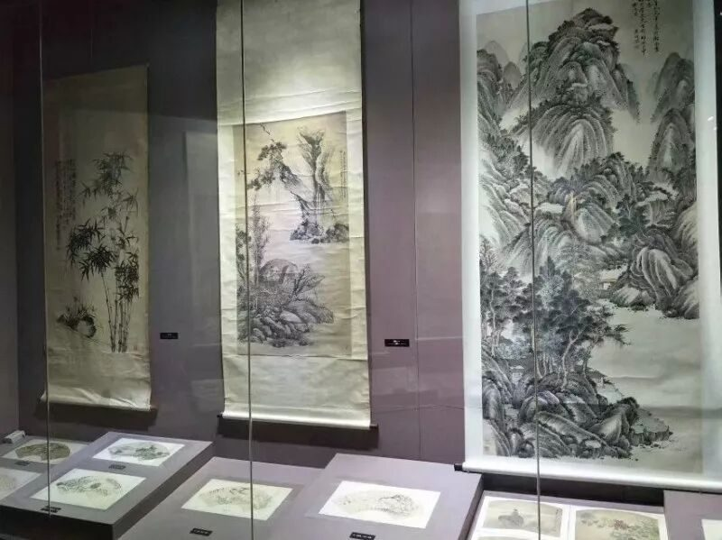

【行者无疆·拾遗皖徽】徽笔挥挥结行程，皖徽点点忆永恒

行程的最后一天，随着清晨的阳光团队来到杨文笔庄，对徽笔非遗继承人杨文匠师进行了采访。
在下午继参观中国徽州文化博物馆之后，实践便进入了尾声。
“词源倒流三峡水，笔阵独扫千人军”，自古以来文章文势之浩瀚，书法笔力之遒劲便是文人墨客所追求的两大成就，而毛笔正是完成这两者的重要载体。相传，毛笔起源于古徽州，蒙恬由兔尾造笔的故事也流传甚广。制作毛笔分为两大工序，即制笔头和制笔杆。“宣城之人采为笔，千万毛中拣一毫”，笔头选毫是制笔的重要步骤之一，纯兔毛虽最早使用，但由于其不能存墨而昙花一现。之后的毛笔，狼毫多用狸毛和黄鼠狼毛制成，在其中加入少量由兔颈毛制成的紫毫增加硬度；羊毫则多用羊毛制成。好的笔头有四大特点：尖、齐、圆、健。蘸水之后笔头收紧谓之尖，捏紧后笔毫平齐谓之齐，笔身饱满谓之圆，行笔书写笔尖不散谓之健。杨文先生说，做新笔必须对不同毛的弹性，不同墨的特性有很深的了解，要能够从书画作品中判断不同笔毫的聚锋力和留墨力，不断摸索最适合的笔毫配比，经历挫折，经历失败，才能做出一支合格的新笔。

真正接触一名制笔世家的传承者，才能懂得制笔之不易。杨文先生说，他家自祖爷爷开始制笔，奶奶如今已百岁高龄。他从小便在爷爷和父亲的教育下学习制笔，笔毛要用牛腿骨制成的梳子梳理，他的手因制笔需要长时间放在水里而出现了皮肤问题。“做匠人容易，做笔师却需要更多技艺之外的东西”。杨先生始终强调，制笔技艺的改良是面向现代的必须过程，需要与时代同进，不可一味仿古。当问及他对传承徽笔制作技艺的看法时，他说，东西肯定会有所保留，也一定会传承下去，我会把我的手艺教给我的儿子和女儿一代代传下去，同时我也希望能够在我后面的日子里，能够写一本书，留下一些资料记载，让以后的人能有所借鉴。
只有真正接触非遗，才能知非遗之精妙，从选毫到鉴别，从传说到传承，杨文先生讲述的细致如丝，行者酱娓娓而听。小小一支毛笔，蕴藏着一位终生与之为伴的笔师内心深处的热爱，笔尖于宣纸之上跌宕流连，墨色在笔尖之下渲染挥洒，有了一支苍劲精妙的毛笔，行云流水似有风雷之声，瞬息之间便绘出一片笔下天地，“七星错落缠蛟龙，挥毫落纸如云烟”。
徽州自古以来就是一个美好的地方，历来以山水之秀、人杰地灵、商贾之富、文风之盛、民风之淳而蜚声海内外，被誉为“东南邹鲁”，“文献之邦”，“文物之海”。徽州高度繁荣的辉煌和文化在博物馆内一一呈列，繁盛一时的徽商文化，享誉盛名的三雕文化，代代相传的宗族文化，重视道德教化的徽州教育，别具一格的新安画派，错落精美的徽州建筑，独树一帜的徽州科技......徽州文化脉络尽览于前。此番“徽州文化”之旅，亦是在翻动和体味一部厚重的历史文化教科书，相信洗去的是铅华，增添的是凝重，蕴蓄的是期待。


山一程，水一程，依依不舍四散行
人难忘，意难平，片片非遗行者情
过去六日，行者酱走过雨后初晴的非遗园，游览历史浩瀚的安徽博物馆，亲眼目睹宣纸制作工序，感受宏村徽州建筑的古朴秀丽，领悟砖雕大师方新中的工匠精神，向杨文先生探求徽笔制作技艺，发放调查问卷并向游客悉心讲解非遗......一程又一程，走走停停，总有一抹风景流连忘返，总有一段历史深入人心，总有一处非遗精彩绝伦。行程虽短，但对非遗的理解愈加深刻；调研结束，但对非遗的探索永不止步。行者无疆，拾遗皖徽，行有尽头，情无止境。
图片丨行者无疆实践团
文字丨李心悦 徐信步 杨宇晴
责编丨邓子孚 应雨珊
审核丨潘雯雯
行者无疆实践团
QQ：2758025831

随行者一起认识世界
长按二维码关注